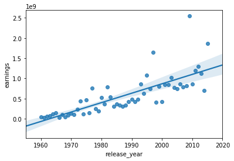
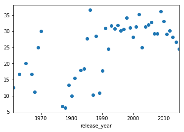

TMDb movie data
(cleaned from original data on Kaggle)
This data set contains information about 10,000 movies collected from The Movie Database (TMDb), including user ratings and revenue.
Certain columns, like ‘cast’ and ‘genres’, contain multiple values separated by pipe (|) characters.
There are some odd characters in the ‘cast’ column. Don’t worry about cleaning them. You can leave them as is.
The final two columns ending with “_adj” show the budget and revenue of the associated movie in terms of 2010 dollars, accounting for inflation over time.
Questions to be answered:
1. Top 5 Movies (rating wise)
2. Top 5 Costliest Movies
4. Top 5 Money Making Movies
5. Top 5 Money losing Movies
6. Most Movie Making Director
7. Best Movies Each Year (Earning Wise)
8. Top 5 Successful Director (Earning Wise)
9. Visualize how top earnings have grown through out the years
10. Visualize losses through out the years (in terms of Percentage)
Note : Movies will be considered for shortlisting only if below conditions are satisfied:
1. Movie run time is greater than 90 Minutes
2. budget is greater than 0
3. revenue is greater than 0
4. Director in not blank
1. Top 5 Movies rating wise
The Shawshank Redemption -> 8.4
The Godfather: Part II -> 8.1
2. Top 5 Costliest Movies
Pirates of the Caribbean: On Stranger Tides
Pirates of the Caribbean: At World's End
3. Top 5 Grossing Movies
Star Wars: The Force Awakens
4. Top 5 Money Making Movies
Star Wars: The Force Awakens
5. Top 5 Money losing Movies
The Adventures of Pluto Nash
6. Most Movie Making Director
7. Best Movies Each Year (Earning Wise)
Please see the answer in the notebook
8. Top 5 Successful Director (Earning Wise)
9. Visualize how top earnings have grown through out the years
The Below graph suggest that the profit has grown linearly throughout the years.

10. Visualize losses through out the years
The Below image suggests that the Losses have been almost consistenly more than 25% every Year after 1990.

References: Stack Overflow
Created by: Vishesh Mani Singh on 03/18/2018